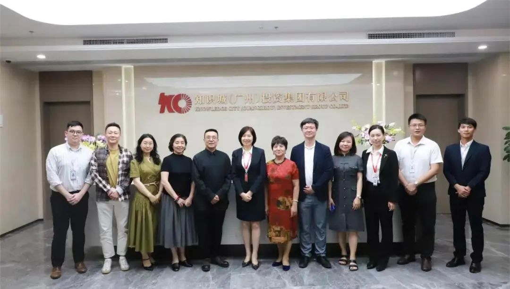
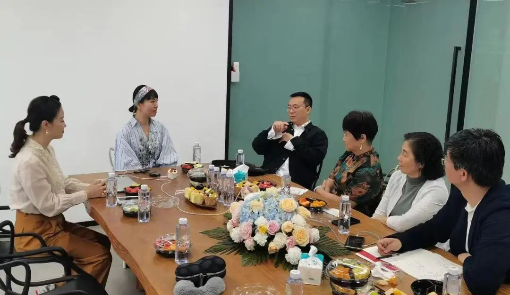
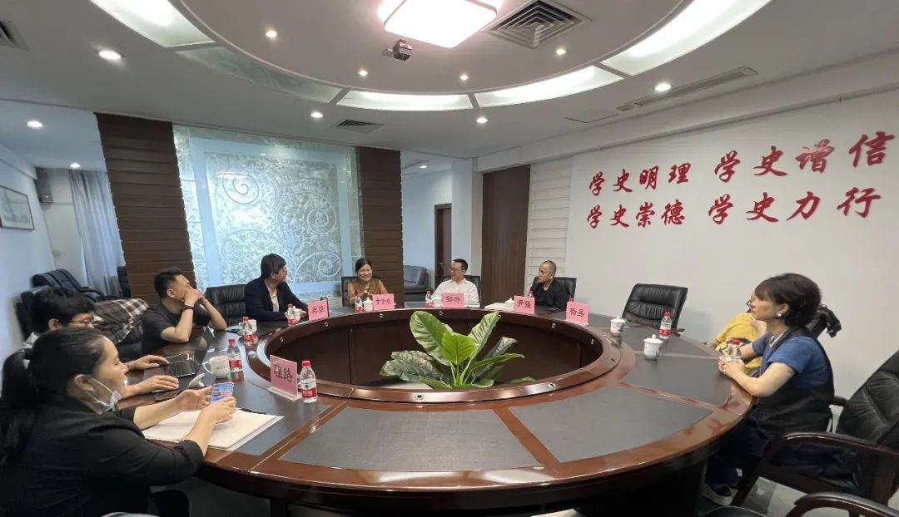

为深入学习贯彻习近平新时代中国特色社会主义思想，牢牢把握主题教育“学思想、强党性、重实践、建新功”的总要求，推动学校高质量发展，促进产学研合作，不断提升学校服务区域经济发展能力，应广东省服饰文化促进会邀请，5月11至13日，北京服装学院副院长邹游带队赴广州进行实地考察调研。
5月11日，调研组一行来到中新知识城，与知识城（广州）投资集团有限公司进行深入交流。中新知识城作为中国—新加坡国家级双边合作项目，是粤港澳大湾区唯一一家国家级国际合作平台。集团党委副书记彭月梅详细介绍了中新知识城项目的整体规划、发展情况以及集团业务和合作意向。座谈会上，各方围绕粤港澳大湾区时尚文化产业发展、美育教育、数字时尚发展、研学和农文旅项目打造等方面进行深入交流。未来，北京服装学院将在大湾区与知识城集团、广东省服饰文化促进会就共同打造粤港澳大湾区时尚总部、研学实践基地、时装节、时尚产业园等开展落地合作，推动产学研深度融合，助力大湾区时尚文化产业发展。
调研知识城（广州）投资集团有限公司
5月12日，调研组一行先后前往“达衣岩”和“谜底”两家国内知名原创服装设计品牌企业。“达衣岩”品牌总经理丁军、“谜底”服装品牌主理人刘星对调研组表示热烈欢迎。调研组深入了解两家企业的品牌文化、生产经营情况、设计研发能力、人才需求等情况，共同就服装行业发展中的重点、难点问题交换了意见。通过此次对两家企业的调研考察，加强了学校与企业之间的沟通与交流，为推进产教融合、校企协同育人创造良好环境。
与企业深入交流
月13日，调研组前往广州市纺织服装职业学校，校长黄素欢对调研组一行表示热烈欢迎。广州作为时尚之都，汇聚了大量时尚创意设计人才和服务机构，广州市纺织服装职业学校为区域时尚设计领域培养输送高素质实用型、技能型人才，推动广州纺织业向着时尚高端转型升级。座谈会上，双方就乡村建设、文化非遗、岭南游学、纺校师资培训等方面进行深入交流，希望两校今后进一步加强沟通合作，相互借鉴。
与广州市纺织服装职业学校开展座谈
通过此次考察调研，促进了我校与广州市服装纺织、时尚文化产业链上企业、协会、院校的沟通交流，开阔了视野，拓宽了思路，为北服提升服务国家战略和产业需求的能力提供助力。学校希望能够充分发挥科研力量和人才优势，与广东当地企业、协会、院校开展产学研合作，助力广东省及粤港澳大湾区服装制造业产业链优化升级，推动时尚文化产业创新发展。
广东省服饰文化促进会会长汤敏仪、理事杨小桦、副秘书长谢俊芝陪同调研。我校继续教育学院、资产公司、服饰艺术与工程学院相关负责人和教师代表，以及部分广州校友参加。